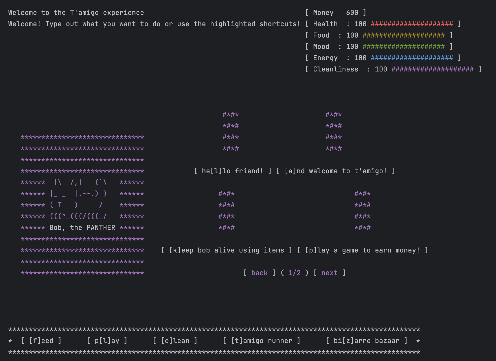
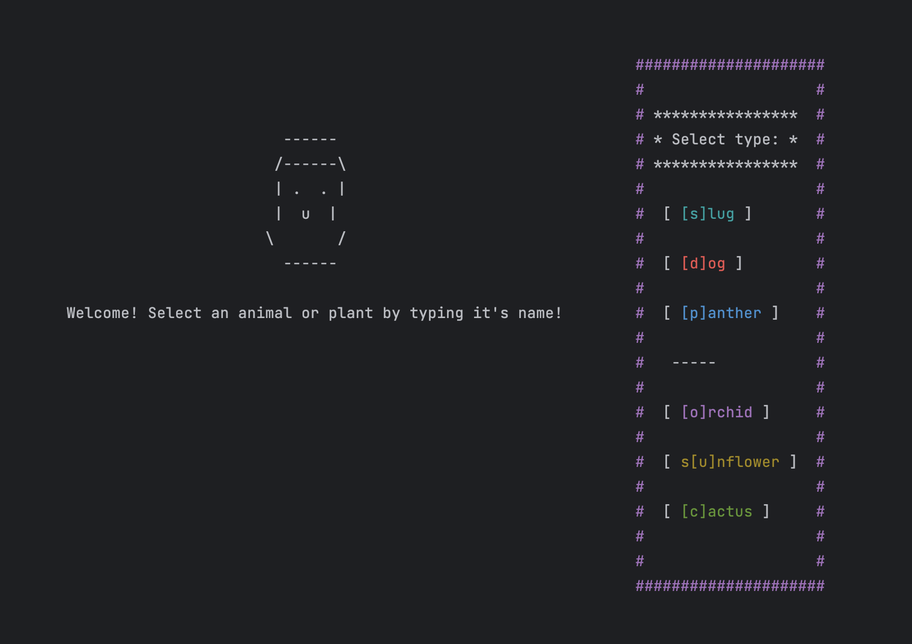
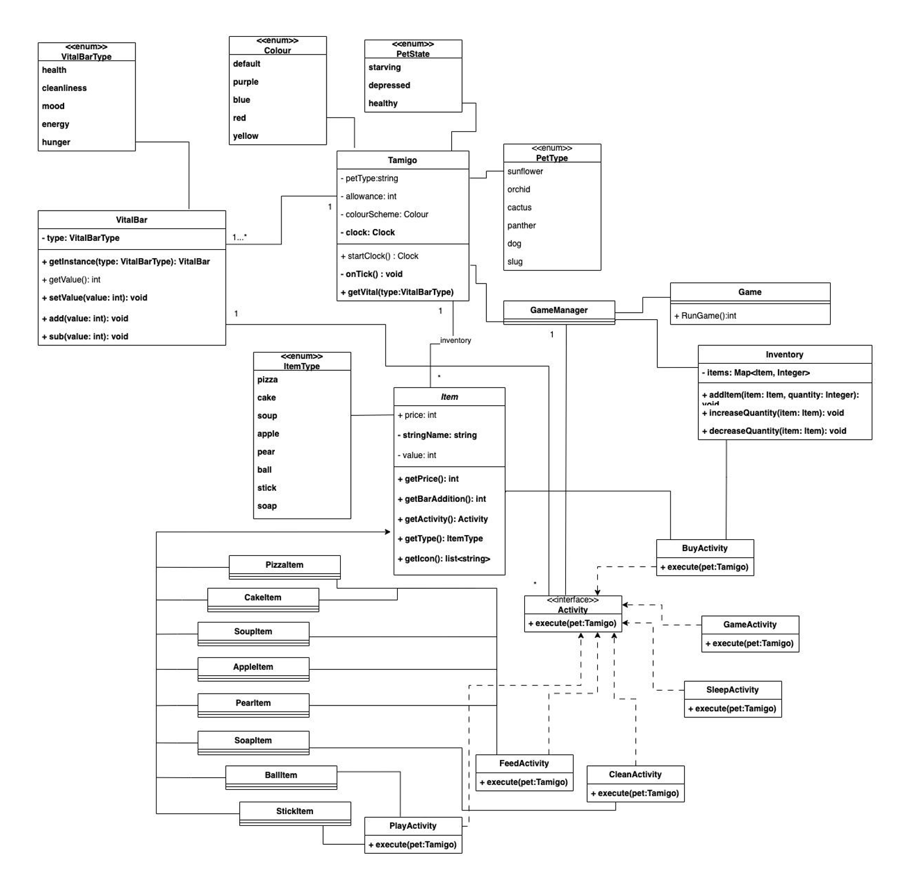

Software Design · Design Patterns
Implemented a Tamagotchi game, including customization, activities, and the Tamagotchi's death.
Working in a group with fellow students, I helped design and develop T’amigo Adventures, a virtual pet simulation game in Java based on the Tamagotchi concept, mixing nostalgia with a contemporary gaming experience aimed at children and young adults.
Caring for the virtual companion was central to gameplay: feeding, hygiene, and monitoring its mood and overall vitality, which changed over time using a game loop. The game also featured character customisation (type, name, and colour scheme), and included T’amigo Runner, an endless-runner minigame where the player’s T’amigo dodged obstacles by crouching and jumping. For the interface, we settled on multi-colour ASCII graphics rendered directly into the terminal.
These are an example of the T’amigo interface and its customisation screen.


To model the system effectively before implementation, we used UML diagrams (Class, Object, State Machine, and Sequence Diagrams) coupled with the application of several design patterns: Singleton, Factory, Strategy, Builder, Command, Composite, and Template. Together, these streamlined the project’s development and kept the codebase organised as functionality grew.
Below is an example of one of the UML diagrams used to model the system.
